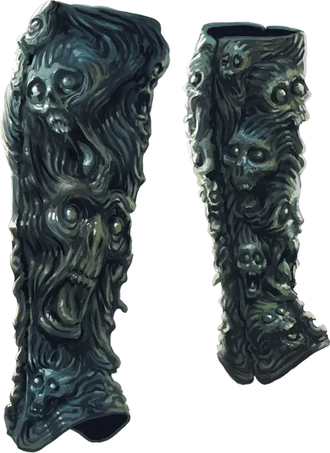

Вопящие поножи
Shrieking Greaves
Чудесный предмет, редкий (требуется настройка)

Рекомендованная стоимость 501-5 000 зм
Я не советую судить о чем-либо по внешнему виду. Однако, если предмет выглядит так, будто он кричит, я советую проверить его на наличие проклятий.
Каждый из этих черных поножей украшен изображениями чудовищных черепов, вопящих от ужаса.
Поножи имеют 3 заряда. Надевая эти поножи, вы можете бонусным действием потратить 1 заряд, увеличивающий вашу скорость ходьбы на 30 футов, и давая вам преимущество на спасброски Ловкости. Эти эффекты действуют в течение 1 минуты. Ежедневно на рассвете поножи восстанавливают 1к3 израсходованных зарядов.
Проклятие. Эти поножи прокляты, и если вы настроитесь на них, проклятие распространится и на вас. Пока проклятие не будет снято при помощи заклинания снятие проклятия [remove curse] или подобной магией.
Вы с помехой совершаете спасброски против состояния испуганный. Всякий раз, когда вы начинаете свой ход испуганным, поножи издают пронзительный крик. Вы и каждое существо в пределах 10 футов от вас должны совершить спасбросок Телосложения Сл 15, получая 9 (2к8) урона звуком при провале или половину этого урона при успехе.